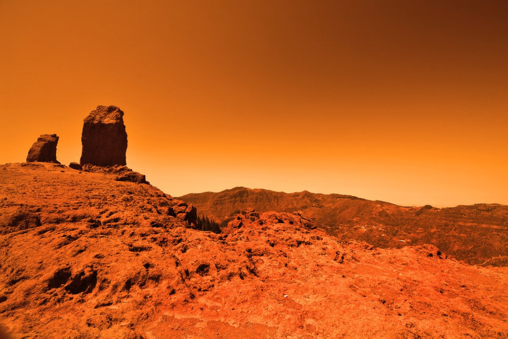

Обо мне
 Я четвёртая планета от Солнца в Солнечной системе.Является сухой и пустынной планетой с атмосферой, состоящей главным образом из углекислого газа. Я известен своими красными песчаными дюнами и вулканическими горами. У меня также есть ледяные полярные шапки и кратеры, которые свидетельствуют о прошлом наличии воды на планете. Я является объектом интереса для исследования исследователями из-за возможности наличия жизни на нем и потенциала для будущих колонизаций.